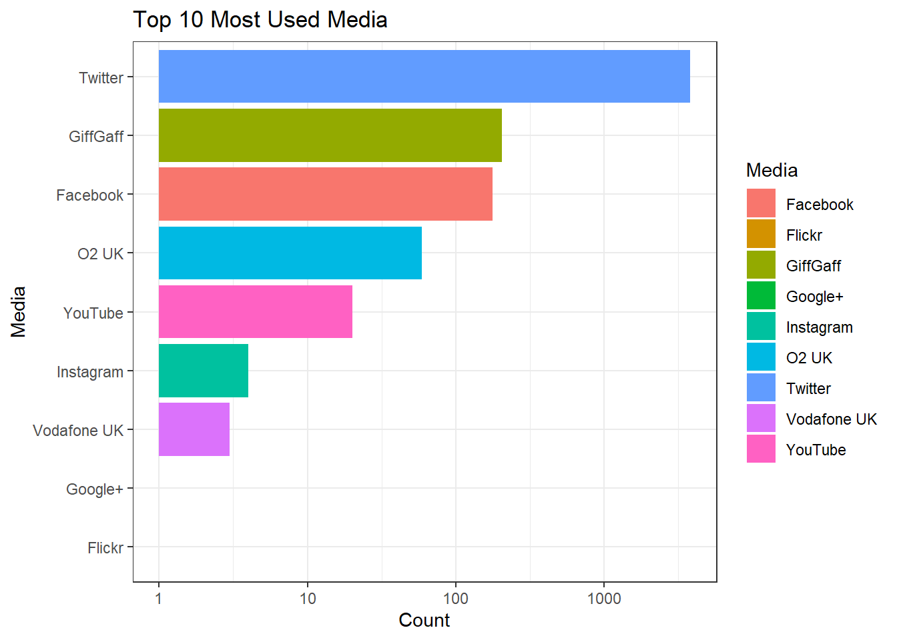
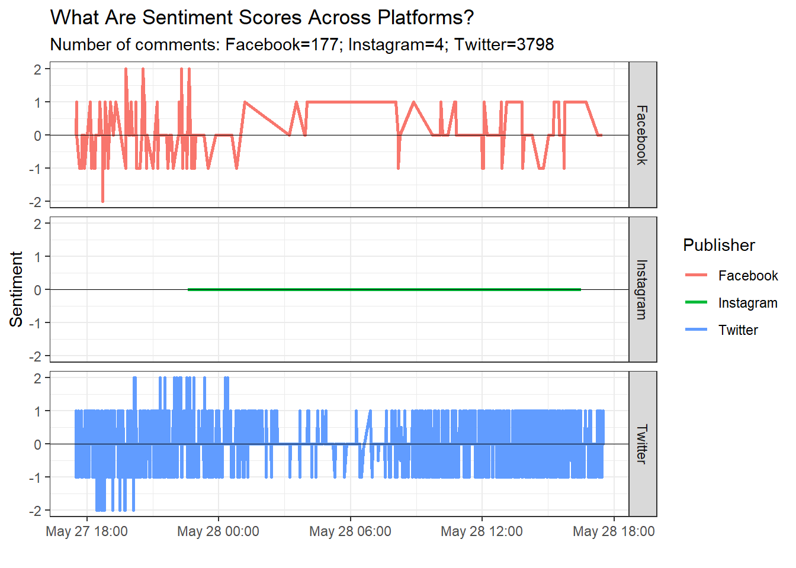

3 Job-Interview: Social Media Data

Figure 3.1: Foto from Google
This tasks is a part of a case study given as a job-exercise. Here I aim to demonstrate how one can solve analytics task with R very efficiently. The exact task reads as follow:
At the company we create clarity, out of the chaos of digital noise. Our big data analytics platform and services combine technology and human expertise to help organizations around the world achieve clear and actionable insights every day.
In our team of data scientists, you will become part of the human layer that develops specialized expertise for organizations, we explore hypotheses and dig deeper into big data assets and uncover actionable insights.
This assignment is designed to give you a glimpse of some of the challenges you will be facing in this role. Please be aware there are no perfect solutions - for us, it’s more important to see how you find solutions, process your ideas, structure your thoughts and how you make your decision paths.
Be creative but realistic about what’s possible. We are thrilled to get to know a bit more about the way you solve tasks.
Task
Using the file provided in the resources section the objective of this task is to analyze an Excel dataset and answer some questions.
- Questions:
- How many authors have interacted in the database?
- Which one is the most used media?
- What is the percentage of each used media?
- What is the percentage of positive, negative and neutral comments?
- What is the average sentiment in Twitter?
- Make a plot of the database using 3 variables. Two of them are provided here.
- Media: Twitter, Facebook and Instagram.
- Visibility: total of comments and average sentiment.
3.1 Data
library(XML)
library(tibble)
library(tidyverse)
library(readr)
library(kableExtra)
library(ggplot2)
library(plotly)As usual, we first load in the data by using readxl_xlsx() function and take a glimpse at it:
data<-readxl::read_xlsx("data/Alto-Case_Study_Dataset (1).xlsx")
glimpse(data)## Rows: 4,287
## Columns: 12
## $ ID <dbl> 109537653, 109556421, 109537642, 109543173, 1095...
## $ Autors <chr> "josiehoulston", "O2", "MuccaMadness", "bhups", ...
## $ TITLE <chr> "@O2 no signal again. Third day of interruption"...
## $ LINK <chr> "http://twitter.com/josiehoulston/statuses/60394...
## $ BODY <chr> "@O2 no signal again. Third day of interruption"...
## $ PUBDATE <dttm> 2015-05-28 17:29:47, 2015-05-28 17:29:30, 2015-...
## $ `PERSONAL-WEBSITE` <chr> "http://twitter.com/josiehoulston", "http://www....
## $ COUNTRY <chr> "gb", "gb", "gb", "gb", "gb", "gb", "gb", "gb", ...
## $ `PUBLISHER-ID` <dbl> 11, 11, 11, 140, 11, 11, 11, 11, 10, 11, 11, 11,...
## $ `PUBLISHER-NAME` <chr> "Twitter", "Twitter", "Twitter", "GiffGaff", "Tw...
## $ `ORIG-ID` <chr> "603946276951031808", "603946202216955904", "603...
## $ SENTIMENT <dbl> 0, 1, 0, 0, 0, 0, 0, 0, 0, 0, 0, 0, 0, -1, 0, 0,...The data has 12 features and 4287 observations. Let us inspect missing values:
apply(is.na(data),2,sum)## ID Autors TITLE LINK
## 0 0 0 0
## BODY PUBDATE PERSONAL-WEBSITE COUNTRY
## 5 0 15 0
## PUBLISHER-ID PUBLISHER-NAME ORIG-ID SENTIMENT
## 0 0 0 0There are 5 missing entries in “BODY” column and 15 in “PERSONAL-WEBISTE.” Consequently, we will remove these entries from the data set.
data<-(data[complete.cases(data), ])
data## # A tibble: 4,267 x 12
## ID Autors TITLE LINK BODY PUBDATE `PERSONAL-WEBSI~ COUNTRY
## <dbl> <chr> <chr> <chr> <chr> <dttm> <chr> <chr>
## 1 1.10e8 josie~ @O2 ~ http~ @O2 ~ 2015-05-28 17:29:47 http://twitter.~ gb
## 2 1.10e8 O2 @luk~ http~ @luk~ 2015-05-28 17:29:30 http://www.o2.c~ gb
## 3 1.10e8 Mucca~ @Sar~ http~ @Sar~ 2015-05-28 17:29:15 http://twitter.~ gb
## 4 1.10e8 bhups Re: ~ http~ Chec~ 2015-05-28 17:29:00 https://communi~ gb
## 5 1.10e8 helen~ @Ash~ http~ @Ash~ 2015-05-28 17:28:54 http://twitter.~ gb
## 6 1.10e8 21Ayu~ RT @~ http~ RT @~ 2015-05-28 17:28:36 http://twitter.~ gb
## 7 1.10e8 O2tou~ RT @~ http~ RT @~ 2015-05-28 17:28:14 http://O2Touch.~ gb
## 8 1.18e8 O2Aca~ RT @~ http~ RT @~ 2015-05-28 17:28:08 http://www.o2ac~ gb
## 9 1.49e8 Dave ~ Re: ~ http~ cant~ 2015-05-28 17:28:04 https://www.fac~ gb
## 10 1.10e8 Emmie~ @The~ http~ @The~ 2015-05-28 17:27:52 http://twitter.~ gb
## # ... with 4,257 more rows, and 4 more variables: `PUBLISHER-ID` <dbl>,
## # `PUBLISHER-NAME` <chr>, `ORIG-ID` <chr>, SENTIMENT <dbl>Finally, our data has the following structure:
glimpse(data)## Rows: 4,267
## Columns: 12
## $ ID <dbl> 109537653, 109556421, 109537642, 109543173, 1095...
## $ Autors <chr> "josiehoulston", "O2", "MuccaMadness", "bhups", ...
## $ TITLE <chr> "@O2 no signal again. Third day of interruption"...
## $ LINK <chr> "http://twitter.com/josiehoulston/statuses/60394...
## $ BODY <chr> "@O2 no signal again. Third day of interruption"...
## $ PUBDATE <dttm> 2015-05-28 17:29:47, 2015-05-28 17:29:30, 2015-...
## $ `PERSONAL-WEBSITE` <chr> "http://twitter.com/josiehoulston", "http://www....
## $ COUNTRY <chr> "gb", "gb", "gb", "gb", "gb", "gb", "gb", "gb", ...
## $ `PUBLISHER-ID` <dbl> 11, 11, 11, 140, 11, 11, 11, 11, 10, 11, 11, 11,...
## $ `PUBLISHER-NAME` <chr> "Twitter", "Twitter", "Twitter", "GiffGaff", "Tw...
## $ `ORIG-ID` <chr> "603946276951031808", "603946202216955904", "603...
## $ SENTIMENT <dbl> 0, 1, 0, 0, 0, 0, 0, 0, 0, 0, 0, 0, 0, -1, 0, 0,...3.2 How many authors have interacted in the database?
My first task is to identify the number of authors who had interaction with the database. In order to do so, we will use column “Autors.” This column has a “character” class. Let us inspect number of authors asked:
# Total number of interactions interacted
length(data$Autors)## [1] 4267# Number of authors interacted with the data base
length(unique(data$Autors))## [1] 2672Out of total 4267 interactions, 2672 are unique. Thus, we can say that the number of unique interactions is 2672.
# Authors
(task1<-as.data.frame(table(data$Autors)) %>%
rename(Authors=Var1, Count=Freq) %>%
arrange(desc(Count))) %>%
head(10)%>% kableExtra::kable(escape = T) %>%
kable_paper(c("hover"), full_width = F)| Authors | Count |
|---|---|
| O2 | 258 |
| SoldoutGigs | 33 |
| O2JobsFeed | 25 |
| yobigdawg | 14 |
| mathew40 | 12 |
| Cleoriff | 10 |
| O2AcademyOxford | 10 |
| PocutDaraa | 10 |
| MI5 | 9 |
| JimGilroy | 8 |
As an extra effort, let us identify the most active authors:
library(ggplot2)
task1 %>%
arrange(desc(Count)) %>%
head(10) %>%
ggplot(aes(x=reorder(Authors,Count),y=Count,fill=Authors)) +
geom_bar(stat="identity")+
labs(x="Authors",y="Count",title = "Top 10 Most Active Authors",
subtitle = "O2 is significantly ahead in comparison to the rest of authors.")+
coord_flip()+
theme_bw()+
theme(legend.position = "none")
The most active authors are:
- “O2” - as the most active by far,
- “SoldoutGigs” and “O2JobsFeed” - follows after “O2.”
3.3 Which one is the most used media?
Next, we should find out which media was the most used one.
media <- as.data.frame(table(data$`PUBLISHER-NAME`))
colnames(media) <- c("Media","Freq")
# Top 10 media used
media <- head(media[order(media$Freq,decreasing = T),],10)
media%>% kableExtra::kable(escape = T) %>%
kableExtra::kable_paper(c("hover"), full_width = F)| Media | Freq | |
|---|---|---|
| 7 | 3798 | |
| 3 | GiffGaff | 204 |
| 1 | 177 | |
| 6 | O2 UK | 59 |
| 9 | YouTube | 20 |
| 5 | 4 | |
| 8 | Vodafone UK | 3 |
| 2 | Flickr | 1 |
| 4 | Google+ | 1 |
# Plot
ggplot(media,aes(fill=Media)) +
geom_bar(stat = "identity",aes(reorder(Media,Freq),Freq)) +
coord_flip() +
theme(legend.position = "none")+
scale_y_log10()+
labs(x="Media", y="Count",title = "Top 10 Most Used Media")+
theme_bw()
The most used media is Twitter, followed by GiffGaff and Facebook.
media_perc<-as.data.frame(prop.table(table(data$`PUBLISHER-NAME`)))
media_perc$Freq <- round(media_perc$Freq*100,4)
head(media_perc[order(media_perc$Freq,decreasing = T),],10) %>%
rename(Author=Var1,Percentage=Freq)%>% kable(escape = T) %>%
kable_paper(c("hover"), full_width = F)| Author | Percentage | |
|---|---|---|
| 7 | 89.0087 | |
| 3 | GiffGaff | 4.7809 |
| 1 | 4.1481 | |
| 6 | O2 UK | 1.3827 |
| 9 | YouTube | 0.4687 |
| 5 | 0.0937 | |
| 8 | Vodafone UK | 0.0703 |
| 2 | Flickr | 0.0234 |
| 4 | Google+ | 0.0234 |
Twitter was used in almost 90% of cases, while GiffGaff and Facebook in a bit below 5% each.
3.4 What is the percentage of positive, negative and neutral comments?
as.data.frame(prop.table(table(data$SENTIMENT))*100) %>%
rename(Sentiment=Var1,Percentage=Freq) %>%
arrange(desc(Percentage))%>% kable(escape = T) %>%
kable_paper(c("hover"), full_width = F)| Sentiment | Percentage |
|---|---|
| 0 | 76.7518163 |
| -1 | 11.5537849 |
| 1 | 10.7804078 |
| 2 | 0.5390204 |
| -2 | 0.3749707 |
The range of sentiment scores in the data set spans from -2 (negative sentiment) to +2(positive sentiment). Based on the analysis, around 77% of comments are neutral, 12% slightly negative and 11% slightly positive. Percentage of extremely positive or extremely negative comments is in total around 0.8%.
3.5 What is the average sentiment in Twitter?
Finally, average sentiment can be easily calculated by addressing the “SENTIMENT” column in the data base with mean() function.
mean(data$SENTIMENT)## [1] -0.004452777Based on the average sentiment value, comments are rather neutral as the average value is close to 0.
3.6 Visalisation task
Make a scatter plot of the database using 3 variables. Two of them are provided here:
Media: Twitter, Facebook and Instagram.
Visibility: total of comments and average sentiment.
By combining information about publishers (Twitter, Facebook and Instagram), date of publishing, sentiment and average sentiment we are able to create a multiple line plot to explain sentiment in each publisher in the given period of a day.
First we filtered data to retain publishers such as Twitter, Facebook, Instagram, GiffGaff and O2 UK. Subsequently, we pivot the table so that the final sheet look like this (only first 6 rows):
plot<-subset(data,`PUBLISHER-NAME`=="Twitter" | `PUBLISHER-NAME`=="Facebook" | `PUBLISHER-NAME`=="Instagram" | `PUBLISHER-NAME`=="GiffGaff" | `PUBLISHER-NAME`=="O2 UK") %>%
rename(Publisher=`PUBLISHER-NAME`,Sentiment=SENTIMENT) %>%
group_by(Publisher,PUBDATE) %>%
mutate(Date=PUBDATE,
Publisher=as.factor(Publisher))%>%
summarise(Sentiment=mean(Sentiment))
plot%>% head()%>% kable(escape = T) %>%
kable_paper(c("hover"), full_width = F)| Publisher | PUBDATE | Sentiment |
|---|---|---|
| 2015-05-27 17:30:00 | 0 | |
| 2015-05-27 17:31:11 | 1 | |
| 2015-05-27 17:31:43 | 0 | |
| 2015-05-27 17:38:51 | -1 | |
| 2015-05-27 17:45:00 | -1 | |
| 2015-05-27 17:45:48 | -1 |
In the first column are publishers we retained. The second column is the exact date and time of publishing the comment. Finally, the last column denotes the sentiment score associated with each comment.
We are in a position to vizualise sentiment scores across platforms in the given observation time.
plot %>%
filter(Publisher=="Facebook"|Publisher=="Instagram"|Publisher=="Twitter")%>%
mutate(avg_sentiment=mean(Sentiment))%>%
ggplot(aes(x = PUBDATE, y = Sentiment)) +
geom_line(aes(color = Publisher), size = 1) +
labs(title = "What Are Sentiment Scores Across Platforms?",x="",subtitle ="Number of comments: Facebook=177; Instagram=4; Twitter=3798")+
facet_grid(Publisher~.)+
geom_hline(yintercept=mean(plot$Sentiment),size=0.1,colour="black")+
theme_bw()
Averages for each media channel are depicted as a black horizontal line in each plot. For all three media channels averages are at around 0. We could see that Twitter is the most balanced publisher as the sentiment scores are pretty constant in the observed time frame. Moreover, Twitter has the biggest count of comments, 3798. Some good news were obviously published on May 27 after 18 PM as the sentiment scores for Twitter, Facebook in this period were extremely positive. On the other hand, Instagram doesn’t seem to be a channel for the company as there is barely any activity.